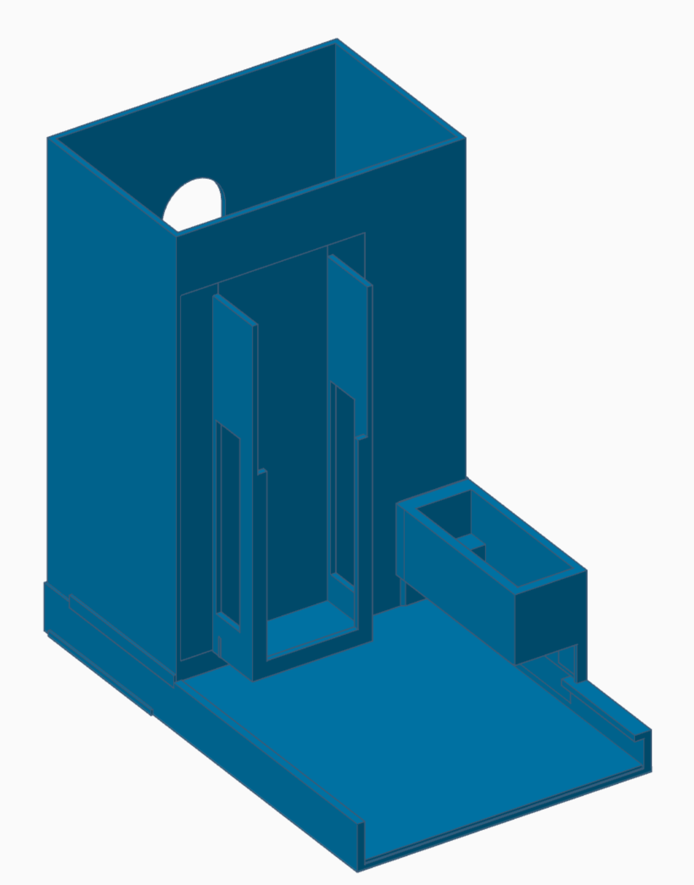

Spenser - un compagnon pour développeurs
1.0.0 - STU1

Spenser - un compagnon pour développeurs
1.0.0 - STU1

Spenser - a developer's companion, publié par José Costa Teixeira. Ce guide n'est pas une publication autorisée ; C'est la version en intégration continue pour la version 1.0.0 construite par le CI Build FHIR (HL7® FHIR® Standard). Cette version est basée sur le contenu actuel de https://github.com/costateixeira/spenser/tree/master et change régulièrement. Voir le répertoire des versions publiées
Built from commit 32957deb.
Cette page comprend des traductions de la langue source originale dans laquelle le guide a été rédigé. Des informations sur ces traductions et des instructions sur la manière de fournir un retour d'information sur les traductions sont disponibles ici.
Voici les pièces 3D utilisées pour construire Spenser.
| Pièce | Image | Description | Téléchargements |
|---|---|---|---|
| Corps |  |
Contient la pile de chocolats, le servomoteur et les rails de guidage, sur sa propre base. | STL |
| Poussoir |  |
Coulisse le long des rails et pousse un chocolat vers la sortie. | STL |
| Bras |  |
Se fixe sur le palonnier du servo et entraîne le poussoir. | STL |
| Goupille |  |
Axe reliant le bras au poussoir. | STL |
Le couloir ci-dessus accepte un morceau jusqu'à 60 × 39 mm, ce qui convient à un napolitain belge. Un napolitain suisse est plus petit — un Lindt Napolitain mesure environ 40 × 25 mm — et a de la place pour bouger. Le jeu de 9 mm dans le sens de la poussée est celui qui compte : il suffit à un morceau pour se glisser vers l'avant sous la paroi de retenue, où le poussoir le rencontre par la tranche.
Ce sont les mêmes pièces, le couloir réduit de 17,5 mm en largeur, de 9 mm en profondeur et de 20,2 mm en longueur de glissière : elles acceptent un morceau jusqu'à 40 × 30 mm, à la même épaisseur de 5,5 à 7,5 mm. Mesurez un morceau avant d'imprimer : 30 mm est la limite dans le sens de la poussée.
La profondeur est la cote taillée sur le morceau, et elle est exacte. La largeur non : elle est fixée par le logement où descend l'Atomic Motion Base, 24 mm pour un module de 24 mm, et par le logement du servo à côté, 12,26 mm pour un boîtier de 12,2. Tous deux tiennent entre les deux mêmes parois latérales que le couloir et on ne peut rien retirer ni de l'un ni de l'autre, de sorte que 17,5 mm est tout ce que ces pièces peuvent céder en largeur. Un morceau de 40 mm de large garde 2,5 mm de jeu latéral dans ce qui reste, et même un ajustement large n'y coûterait rien : un morceau de 30 × 40 ne peut pas tourner dans un couloir de 31 mm de fond, aussi large soit-il.
Deux choses changent dans la construction. Réglez anglePush=78,6 sur cette
unité, au lieu de la valeur par défaut de 77. Et montez le bras de sorte
qu'au repos il soit environ 44,5° en arrière de la perpendiculaire au couloir,
et non d'équerre : cela recule toute la course et c'est ce qui permet au
corps d'être aussi court. Le contrôle : au repos, la face de poussée doit se
trouver juste derrière la pile de chocolats. Les 26,7 mm sont pris à
l'arrière, derrière le poussoir, et non à la bouche : le morceau sort par
l'autre extrémité, et 6,5 mm d'entre eux sont remis sous le servo, ce qui
amène son logement contre la face arrière. Le servo lui-même se monte
retourné bout pour bout par rapport à l'unité standard, pour que son câble
sorte à l'arrière ; la goupille va alors dans la deuxième rainure du
poussoir, qui reprend les 5 mm dont le boîtier retourné déplace l'axe. La goupille a ici sa propre pièce et n'exige aucun
perçage : son trou dans le bras fait 3,1 mm dans ces fichiers contre 2,76 sur
le bras standard, et la goupille elle-même 2,3 mm au lieu de 2,55. Il a fallu
bouger les deux moitiés. Un petit trou s'imprime sous sa cote et un petit axe
au-dessus de la sienne, et ensemble ils ont mangé les 0,44 mm de jeu du
dessin, de sorte que la goupille n'entrait pas ; il y en a 0,79 maintenant.
La goupille standard ne change pas — percez le bras standard à 2,6 mm si c'est celui-là que vous montez.
Pour une autre taille de morceau, tools/resize/build.py taille ces
trois pièces à sa mesure et affiche ce que devient la course. Un morceau se
donne en largeur du couloir × longueur le long de celui-ci × épaisseur, donc
--piece 40x30x7 --name small est cette variante ; sans rien derrière, le
script prend la mignonnette belge pour laquelle les pièces ci-dessus sont
déjà taillées, et dit qu'il n'y a rien à tailler.
| Pièce | Description | Téléchargements |
|---|---|---|
| Corps | Un couloir de 43,5 × 31 mm au lieu de 61 × 40 ; 46,5 × 80,8 × 105 mm hors tout. Le logement du module garde ses 24 mm entiers et le servo ses 12,26, et aucune hauteur n'y bouge : l'épaulement qui retient le poussoir, le boîtier du servo et la sortie sont là où le corps standard les place. Le servo se monte retourné bout pour bout, de sorte que son câble sort à l'arrière de l'unité au lieu de regarder vers le magasin, et tout son logement recule de 6,5 mm pour que l'axe reste près de là où il était. Le câble doit alors franchir toute la longueur de la tour ; la paroi latérale du magasin avance donc de 13,0 mm au-dessus de celle-ci, aussi haute que le rail du module en face et percée de la même fenêtre, pour que le câble s'y appuie. | STL |
| Poussoir | 42,4 × 46 mm, pour correspondre au couloir plus étroit, avec deux rainures de goupille de 2,55 mm : la goupille entre dans l'une ou l'autre, et la seconde, 5 mm plus vers l'intérieur, maintient le poussoir 5 mm plus en arrière sur toute la course, et c'est celle que demande ce corps, le servo étant retourné. | STL |
| Bras | 26,75 mm entre les trous au lieu de 41, ce qui donne une course de 33,76 mm avec anglePush=78,6, à la mesure du couloir moins profond. |
STL |
| Goupille | 2,3 mm d'axe au lieu de 2,55, l'autre moitié de l'ajustement avec le bras. | STL |
Les quantités indiquées sont celles du distributeur à 2 positions.
| Article | Description | Quantité |
|---|---|---|
| Corps | Contient les chocolats, le moteur et les rails de guidage | 2 |
| Bras | Bras rotatif fixé au servo | 2 |
| Goupille | Relie le bras au poussoir | 2 |
| Poussoir | Pousse un chocolat vers la sortie | 2 |